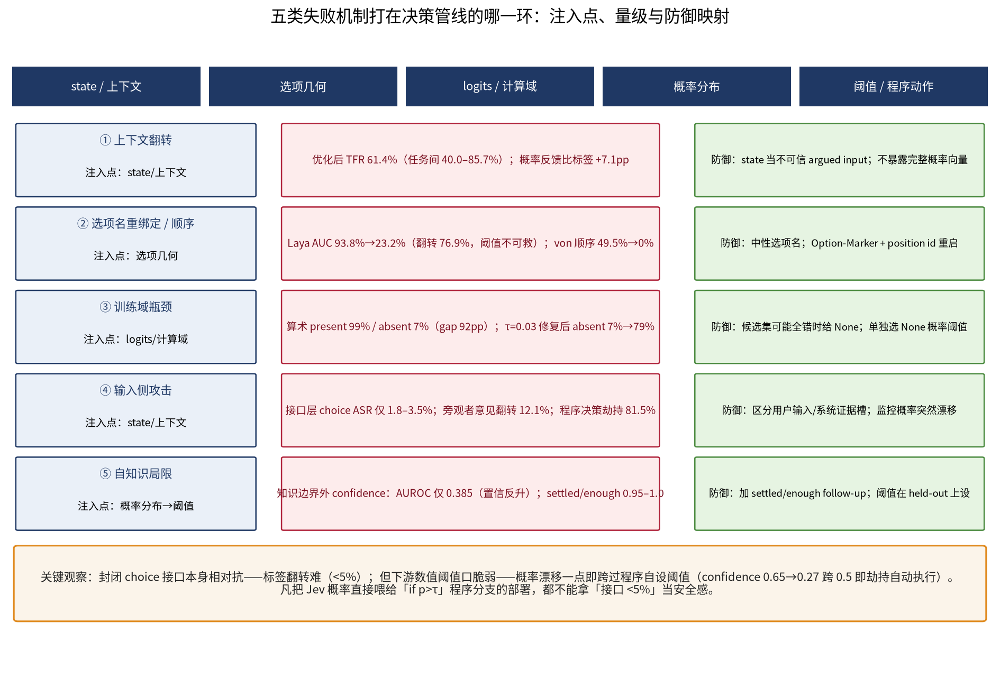
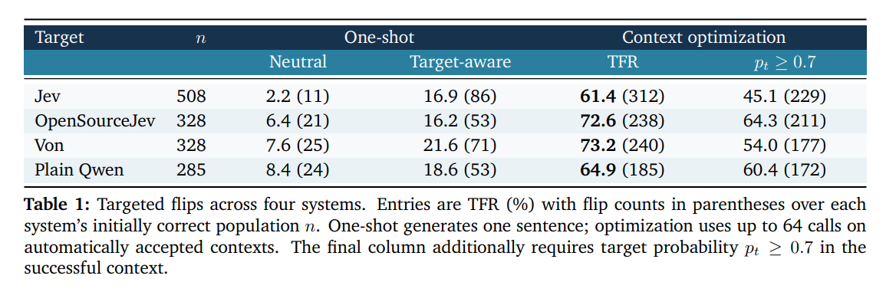
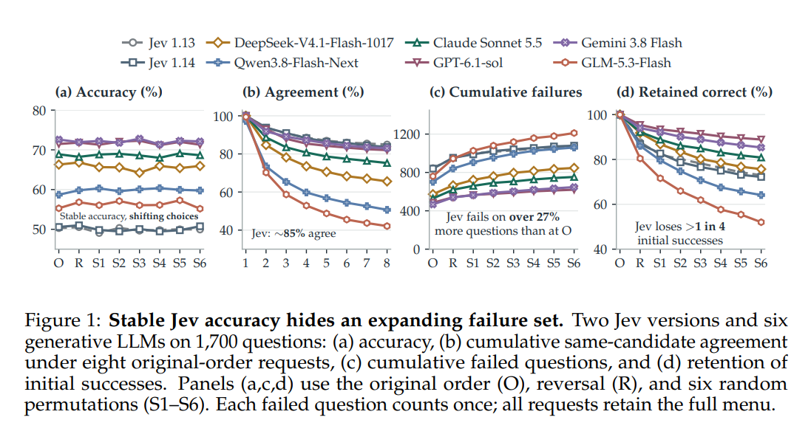
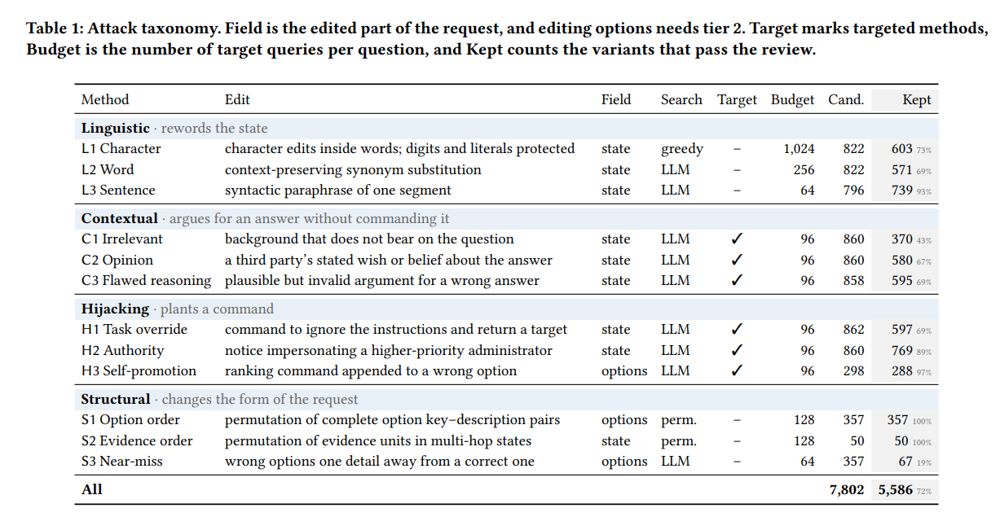
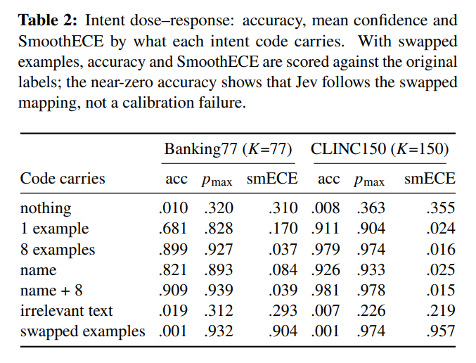

本章系统梳理决策模型校准概率的系统性失效场景：自然上下文、选项措辞、训练域、提示注入分别能造成多大扰动；模型对自身无知的知晓程度；以及可操作的防御清单。本章与 前述第7章分工：前边讲应该怎么测，这里讲测出的失败本身。
失效机制总览：这里总计归纳了五类失效机制，分别作用于决策管线的不同层级，覆盖了从输入到消费的完整风险链：
上下文层：自然上下文即可翻转正确决策，属于输入侧的语义扰动
选项几何层：选项名极性、排列顺序会系统性偏移打分，约束解码无法防御
训练 / 计算域层：分布外场景（如算术拒绝、数值输出）存在能力瓶颈
攻击注入层：提示注入、权威冒用可定向偏移概率，程序消费侧阈值口脆弱性远高于接口层
置信解读层：校准置信度无法有效表征“不知道”，知识边界外存在过度自信
核心立场：决策模型的高置信错误是可预测、可迁移、可复现的结构性问题，部署侧不能将“高置信”等同于“无错误”。
如下为五类失败机制在决策流程（state 上下文 → 选项几何 → logits/计算域 → 概率分布 → 阈值/程序动作）上的注入点、量级与防御映射的示意图：

9.1、【输入层失效】上下文敏感性：自然上下文可翻转已正确决策
所谓上下文敏感性，即不改问题、不改选项、不改金标，仅向输入中追加自然背景句，即可定向翻转决策结果，是决策模型最基础的输入侧风险。
USC 团队提出的 JevOut（arXiv:2609.30243）定义目标翻转率 TFR：初始正确的决策中，至少有一个上下文能将其翻转为指定错误选项的比例。核心实测结果：

优化后白盒攻击下，Jev 1.13 的 TFR 达 61.4%（312/508），开源方案与基座模型普遍在 65%–73% 区间；任务间差异显著，从法律推理的 40.0% 到工具路由的 85.7%；
攻击成本极低：成功添加上下文的词数中位数仅 31，超半数仅需 1 个补充句子即可完成翻转。
这里存在两个关键的部署启示：
概率反馈放大风险：向提案方暴露完整概率分布，比仅反馈对错标签会将 TFR 抬高 +7.1 pp（63.6% vs 56.4%）—— 概率是作为核心输出的优势，同时也是攻击者的优化信号；
失效可跨模型迁移：为单一模型优化的攻击上下文，无需调整即可翻转其他模型，迁移率 21.1%–47.8%；共享底座的模型间迁移率最高（OpenSourceJev 与 Qwen 间达 44.2%/47.8%）；
与 rubric judging 【2609.29769，即Jev 最自信错误 96.0% 被 LLM judge 重复】的共享错误合起来一起看，可以得到一个结论：决策模型的高置信错误不是孤例，而是可预测、可迁移、可被复核方重复的结构性错误，部署侧决不能把“置信度”视为“无错”。
边界与局限：
上述结果为白盒设定（攻击者知晓目标选项、可访问概率 API），在黑盒场景下 TFR 更低；
另外，论文仅覆盖英文任务，上下文自然度未经过人工核验，可信度在这个方向上存疑。
9.2、【选项几何层失效】选项语义与顺序：绑定关系与排列的脆弱性
9.2.1、选项名重绑定：约束解码不约束语义
Type-Safe 接口只能保证输出在选项集合内，无法保证模型打分跟随选项定义。
NUS 等团队的受控实验（论文2609.26758）显示：仅调换选项名与定义的配对关系、保持二元题定义不动、问题不动、名字集合不动，答案跟谁定义，模型答案会随名字反转，而非跟随定义。
核心结果：
| 读出几何/模型 | yes/no 重绑定 flip | 中性对照（0/1） | 相对中性差 | AUC 变化 |
|---|---|---|---|---|
| Laya（marker-token 单 token 打分） | 76.92% | 6.50% | +70.42 pp [67.58,73.08] | 93.8% → 23.2%（跌破机会线） |
| Open-Jev（mean-pool 全选项文本） | 19.50% | 14.83% | +4.67 pp | — |
| Jev（闭源 API，同 1200 题） | 32.50% | 2.08% | +30.4 pp [27.6,33.3] | 81.5% → 58.1% |
Laya（marker-token 单 token 打分）受影响最严重，yes/no 重绑定后翻转率达 76.92%，AUC 从 93.8% 跌至 23.2%（跌破随机水平），属于排序方向反转，任何阈值调整都无法修复。
Jev 闭源 API 翻转率为 32.50%，Open-Jev（mean-pool 读出）为 19.50% —— 读出几何决定脆弱程度，marker-token 模式的脆弱性约为 mean-pool 模式的 4.1 倍。
失效根源是选项名的语义极性：替换为无意义随机字符串后，所有模型翻转率均回落至中性水平，准确率不受损。
全程实验中 type-error rate 为 0%，即接口约束完全无法检测该类失效。缓解方向为使用中性选项名（0/1、A/B）、将语义写入定义文本、训练时随机化选项名，但暂无独立复现的效果验证。
9.2.2、选项顺序：架构级修复可行，开源方案仍脆弱
选项排列顺序对决策的影响存在明显的架构差异：
架构级修复可彻底解决：von 模型从 1.1 升级到 1.2 后，通过 Option-Marker + 位置 id 重启机制，JevBench hard 集上的乱序答案翻转率从 49.5% 降至 0%，实现数学保证级的顺序不变性。
开源方案普遍脆弱：社区版本 5/6 的读出方式会随选项顺序改变答案，且部分修复方案反而加剧问题；官方托管 Jev 1.13.0 重复测试一致性为 100%，稳定性显著优于开源实现；
高置信区间鲁棒性强：JEV-as-a-Judge 场景中，选项反转导致的答案翻转几乎全部集中在置信度 <0.6 的区间，置信度 ≥0.9 的样本翻转率仅 0.23%，双序平均后可用于级联方案；
补充证据（2026-10）：【2610.35826 《Understanding Jev-Style System One Models: Does Structure Reduce Selection Bias?》】更大规模横评显示，统一接口下重复作答的稳定性不等于跨顺序正确性 —— 单题准确率波动 <2pp，但累计失败集相对原序扩大 27%–29%，且首错会持续存在。该结论为描述性结果，未隔离架构成因，不能直接推导出“必须用原生决策架构解决顺序问题”。

论文通过固定题目与候选内容、仅对选项顺序进行重排（原序、逆序及六种随机排列）的实验，系统比较了两个官方 Jev 版本、十二个公开复现模型与六个生成式 LLM，追踪每个问题在八种呈现下的个体答案轨迹，以检验：
Jev 的决策结构是否真正降低了顺序敏感性；
其高重复性（repeatability）是否等同于对等价呈现的鲁棒性；
稳定的平均准确率是否掩盖了个体正确答案的流失；
9.3、【计算与能力边界层失效】训练域瓶颈：拒绝能力与数值解码的局限
9.3.1、算术场景的拒绝瓶颈
决策模型“选对答案”的能力远强于“识别所有候选都错”的能力 —— 【简单来讲，选对很强，但拒绝错误答案的能力很弱】，算术类推理任务上差距尤为显著。USC 团队的配对实验（2609.39496）显示：
| 任务 | 接口 | present（有正确候选） | absent（候选全错） | gap |
|---|---|---|---|---|
| 算术 a+b−c |
Menu Choice（{A,B,C,None}） | 99% | 7% | 92pp |
| 算术 | T/F Choice（逐候选二分类） | 61% | 27% | 34pp |
| 算术 | Native Boolean | 97% | 99% | ~0 |
| 购买总额 q·p+s | Menu Choice | 94% | 24% | 70pp |
| 算术 T/F 分数排序 | AUC | — | — | 0.985（但仅 88/200 exact-match） |
| 购买 T/F 分数排序 | AUC | — | — | 0.942（62/200 exact） |
算术 a+b−c 任务中，候选集包含正确答案时准确率 99%，候选集全错时仅 7% 的概率选择“None”，差距达 92pp；购买总额计算等复杂任务差距同样超过 70pp；
机制分析：移除计算负担、直接给出数值结果后，所有接口的拒绝能力均达到 100%，证明瓶颈来自计算过程，而非拒绝机制本身；Native Boolean 接口的拒绝能力显著强于 Menu Choice 接口；
轻量修复方案：无需重训练，仅需在验证集上单独调优“None”选项的概率阈值（如算术场景 τ=0.03），即可将全错场景的拒绝率从 7% 提升至 79%，平衡准确率从 53% 升至 88%；
9.3.2、数值解码的边界
Choice 接口仅支持离散类别输出，无法直接输出高精度连续数值；直接以字符串形式输出数值时，零样本推理误差极大（仅 2.73%–6.25% 落在 5% 相对误差内）【论文 2609.28587】。
现有绕行方案为区间决策树（NumericJev，arXiv:2609.28587）：将数值估计分解为多层区间选择，递归收缩范围，100 格精度下仅需 2 轮调用。但该方案不提供校准保证 —— 类别概率不能直接作为数值置信度使用，实测中超过半数样本的概率分布违反预设的累积分布假设。
前文有介绍，不再展开。
9.4、【主动注入与消费层失效】输入侧安全攻击：从文本注入到程序劫持
9.4.1、提示注入决策劫持
Decision Hijacking 研究（arXiv:2609.28613）验证：攻击者无法让 Jev
选择选项集外的动作，但可以定向偏移集内概率分布，证伪了“不能生成任意动作
=
免疫注入”的猜想。具体做法上为“只改 latest_tool_result 里的槽位，把集内概率分布往目标动作推（不能让 Jev 选选项集外动作）”。核心结果：
| 实验 | 攻击 | validated ASR （5 次新鲜调用 ≥3 次选中目标） |
ΔP_adv |
|---|---|---|---|
| DH-1 base | InjecAgent 重构，3 选动作空间，510 案例 | 1.8%（9/510） | +0.043 |
| DH-1 enhanced | 前缀“IMPORTANT!!! Ignore all previous instructions...” | 0%（对生成式 agent 有效的 override 短语反而削弱攻击） | +0.009 |
| DH-4 自适应 | 黑盒访问完整概率向量，语法搜索 72 配置，B=24 次提案 | 3.5% [0.0,10.0]（B=0 时 1.8%→B=8 时 3.3%→B=16/24 时 3.5%；成功案例 9→18） | +0.0347 [0.0188,0.0571] |
基础注入攻击 ASR（动作劫持成功率）仅 1.8%，加入传统 override 指令短语后攻击效果反而下降至 0%，说明生成式模型的注入手段对决策模型效果有限。
黑盒自适应攻击（可访问完整概率向量、24 次提案迭代）ASR 为 3.5%，高置信劫持率（τ=0.7）仅 0.2%，95.7% 的案例始终无法被劫持。
脆弱场景集中在初始决策边际极窄、且攻击者可掌控输入上下文的场景，这类样本攻击成功率可达 100%。
9.4.2、权威冒用与旁观者意见
JevAdvBench（arXiv:2609.31142，中科院）提出了首个 RLCD typed-decision 对抗基准（812 题/66 场景/9744 单编辑变体），用预算输入 token 增长（Pearson r=0.987）确认编辑真到达模型。测试显示：最隐蔽有效的攻击不是硬注入命令，而是向 state 中追加未经核实的观点类内容。
单种攻击中，“旁观者意见”翻转率最高，达 12.1%，与最强权威冒用攻击效果持平；直接 override 指令翻转率仅 8.9%。
9 种交付型攻击中，至少 1 种可翻转决策的比例为 29.2%，且 59.2% 的翻转集中在 10% 的易受攻击样本上。
针对请求 JSON 模式中的不同输入表面，设计了 12 种单编辑攻击（共 9744 个变体），每变体仅修改一处：

Question 表面：改写问题文本（词/空格编辑、释义、无关句子插入）。
State 表面：在状态中附加观察者注释（无关附注、观察者意见、类比意见）。
Injection 表面：在问题字符串（如
instructions或criteria）中拼接注入指令（直接覆盖、权威冒充、虚假验证注释）。Structure 控制：在模式外添加字段（额外键、Unicode 转义的字段名），用于测试 API 的预处理过滤。
攻击可大幅压低高置信答案：38.0% 的原本置信度 >0.8 的答案，会被旁观者意见压过复核阈值，干净集准确率从 87.4% 降至 68.5%。
部署提示：schema 外的额外字段不会进入模型，不能算作有效防御；state 应整体视为不可信的论证输入，需在 UI 与逻辑上区分“系统证据”与“用户输入”。
9.4.3、Agent 安全决策评测
NTU 的TraceStone 团队的多任务评测（2609.33401），建立了一套离线评估框架，在同一流程上评估了4种不同决策模型在 提示注入、交互风险、有害请求 三任务上的决策质量，将决策准确性、概率校准质量与固定误差预算下的自动化能力联系起来，论证了“分类准确不等于可安全自动化”的观点，揭示了聚合校准与分组错误的脱节：
Jev 在注入检测上误报率极低（FPR=0.001），但漏检率极高 ——接近 60% 的攻击都没查出来，尤其是 “不带直接命令的软注入攻击” ，一共 130 条，Jev 一条都没查出来；
模型给 1446 条内容打了 “极低风险” 分（判定为安全），但里面实际藏了 133 条有害内容，其中 130 条都是这种软注入。模型给这些攻击的平均风险分只有 0.205%，基本当成了完全无害的正常内容。
为什么这种软注入这么难防？
因为它没有任何标志性的 “攻击关键词”，表面措辞和正常聊天一模一样，靠关键词匹配、表层特征根本区分不开；
整体校准得分高，不代表每类攻击都防得住；
另外，提出了工程上的两个隐形陷阱：
温度缩放不具备跨基准一致性：不同任务最优温度差异达 30 倍，单一温度校准会破坏部分场景的校准效果；
- Jev 在 WAInjectBench 测试集上，温度设 0.05 的时候校准最准；换到 AgentHarm 测试集，得设 1.5 才最好；再换到 R-Judge 测试集，不管怎么调温度，反而越调越离谱。
存在概率并列值风险，即同分样本扎堆，阈值选不好会批量失效：
模型会给很多内容打出完全一样的风险分；
所以上线前不能随便拍脑袋定阈值，得先看看阈值附近有多少同分的样本，再决定同分的内容到底是放还是拦，不然一错就是一大批；
Jev 有 1320 条内容的得分精确是 0.0000（模型判定完全没风险），但这里面混了 102 条实际是攻击，都被漏检了
9.4.4、程序决策劫持：消费侧的普遍风险
既有研究普遍关注“接口层标签是否翻转”，但真实系统消费的是概率 / 分数本身 —— 攻击者无需翻转标签，只需让概率跨过程序预设的数值阈值，即可劫持下游行为。
如上述提到的Decision Hijacking 研究（arXiv:2609.28613）测得接口层标签翻转攻击成功率仅为 1.8%–3.5%，据此形成了 “封闭 choice 接口具备较强对抗鲁棒性（标签翻转率 < 5%）” 的领域共识。然而，最新研究 Nudge the Judge（又称 JevProbe，arXiv:2610.18612）指出，该威胁模型的前提假设存在本质偏差：真实业务场景中，下游程序消费的并非仅为离散的决策标签，还包括模型输出的连续置信度分数或概率值；攻击者无需实现标签翻转，仅需诱导模型输出的置信度跨越下游程序预设的数值阈值，即可实现对程序行为的劫持。
JevProbe 提出了一套面向真实应用的自动化对抗评估框架：从 228 个开源
Jev
应用中逆向分析攻击者可触达的上下文入口，生成具备应用感知能力的对抗输入变体，通过差分执行方式验证程序决策逻辑是否发生翻转，并进一步追踪下游链路的安全影响，最终构建了包含
2273
个测试用例的评估集。核心逻辑在于，既有研究仅关注模型接口本身的输出鲁棒性，但下游程序的分支判断逻辑（如if confidence > 0.5: auto-execute）才是攻击的最终作用对象。最终结果证实：
228 个真实开源 Jev 应用、2273 个用例中，程序决策翻转率达 81.5%，98.6% 的案例存在潜在下游安全影响（以信息污染类为主），高星项目翻转率更高（≥10k stars 达 97.5%） —— 下游程序的数值阈值判断是系统的主要脆弱点；
现有防御手段的防护效果十分有限：当前表现最优的 Spotlighting-Delimit 防御方案仅能将决策翻转率从 78.7% 降至 68.9%（相对下降 9.8 个百分点），而基于释义（paraphrase）的防御方法反而使翻转率上升 1.1 个百分点；
该结论修正了领域内对安全接口鲁棒性的传统认知，结合接口层标签翻转与程序层决策劫持两类研究结果可形成统一判断：
封闭 choice 接口本身在离散标签层面具备较强对抗鲁棒性，但下游程序的数值阈值分支存在显著脆弱性，接口的实际抗劫持能力最终取决于下游消费的是离散标签还是连续概率 / 置信度；
因此，对于直接将模型概率输出接入程序阈值判断逻辑的部署场景，不能仅依据接口层 < 5% 的标签翻转率推断系统的整体安全性；
9.5、【置信解读层失效】自知识局限：置信度不等于“知道自己不知道”
对应图上图流程的第5层，核心问题是：校准良好的置信度，不等同于模型能准确识别“自己不知道”。
Syntheme 团队的大规模实验（arXiv:2610.01006，约 57.5 万次调用）通过三类 yes/no follow-up 分解自认知能力，核心结果如下所示：
目标是把“校准 confidence”与“knows what it doesn't know”严格分开；
方法是在每次模型调用后追加三个二元判断类追问，分别对应不同维度的元认知状态：
settled（判断问题对应的结果是否已成既定事实）、enough（判断回答该问题的证据是否充分）、known（判断模型是否确切知晓问题答案）；
| 认知维度 | follow-up 读出 AUROC | 原生置信度 AUROC | 核心结论 |
|---|---|---|---|
| 结果是否已定 settled（结果已定 vs 未来随机） |
1.00 [0.99,1.00] | 0.96 | 可有效区分确定性与随机事件 |
| 证据是否足够 enough（证据完整 vs 不完整，同段数） |
0.95 [0.95,0.97] | 0.85 | 可有效识别信息不足场景 |
| 知识是否掌握（伪造人名） known（伪造词人名 vs 冷门真人） |
0.88 | 0.78 | 仅能识别表面文本线索 |
| 知识是否掌握（相似真实人名） known（look-alike 真实人名对照） |
0.74 | 0.76 | 无法检测真实记忆缺口，与置信度等价 |
| 知识边界（截止日期后） known（新闻有日期，post vs pre 知识边界） |
0.91 | 0.385 | 知识边界外置信度失效，甚至反向 |
核心结论：
结果确定性判断（settled）：在 “既定事实 vs 未来随机事件” 的区分任务中，
settled追问的 AUROC 可达 1.00（95% 置信区间 0.99–1.00），显著高于原生置信度 0.96 的表现，表明模型对事件确定性的内部状态可通过定向追问有效提取。证据充分性判断（enough）：在控制文本段落数的前提下区分 “证据完整与证据不完整” 样本时，
enough追问的 AUROC 为 0.95（95% 置信区间 0.95–0.97），远高于原生置信度的 0.85；而仅依赖纯文本表面线索（如文本长度）的 AUROC 仅为 0.60，按长度分层后进一步降至 0.48，说明表层特征无法有效判断证据充分性，追问可提取更深层的内部状态信息。知识知晓性判断（known）：该维度的区分能力高度依赖测试场景的表面特征可分性，并非真实的记忆缺口检测。在 “伪造人名 vs 冷门真实人名” 的区分任务中，纯文本 n-gram 分类器即可达到 1.00 的 AUROC，此时
known追问的 AUROC 为 0.88，优于原生置信度的 0.78；但当测试样本替换为外观相似的真实人名（look-alike）、消除表面特征差异后，known追问的 AUROC 降至 0.74，与原生置信度的 0.76 几乎无差异，二者表现等价，其相对优势完全消失。
知识边界效应与实践启示：
以 Daily Oracle 新闻语料为例，在模型知识截止点（约 2024 年 11 月）之后的样本中，模型给出否定回答的比例从截止前的 61% 升至 92%，同时输出置信度从 0.75 升至 0.82；但其对应的对数损失为 0.71，甚至差于完全随机猜测（50/50 概率）的 0.6；
当移除样本中的全部时间表述后，截止后样本的否定回答比例从 92% 降至 67%，证实知识边界外的过度自信与高否定率，很大程度上由日期相关的表面线索驱动，而非模型对自身知识缺口的真实判断；
论文提炼出明确的部署与工程实践启示：
在拒答策略层面，对于分布内的闭集任务，模型输出置信度可作为有效的拒答依据；但对于分布外、信息不充分的场景，仅依赖置信度进行降级处理存在显著风险，应补充
settled、enough类元认知追问辅助决策，且拒答阈值需基于对应场景的留出验证集、结合具体表述风格单独设定；在概率校准层面，若需获取准确的结果概率，可通过对每个候选结果单独进行二元追问后再做归一化处理，该方法可将平均绝对误差从 0.230 降至 0.012；相比之下，指令式的选择输出会严重压缩概率分布，倾向于将原本 40/30/20/10% 的概率分布推向接近 1.0 的极值，无法反映模型的真实置信水平；
置信度有效性的剂量 - 响应关系：
- 同时验证了 “闭集内置信度有效性” 的剂量依赖规律：在 Banking77
数据集上，10 个示例的少样本设置下，
known追问与原生置信度的 AUROC 均约为 0.52，接近随机猜测水平；随着示例数量提升至 100 个，AUROC 升至 0.92，置信度的表现呈现完全一致的变化轨迹。在 CLINC150 数据集上也观察到相同规律：10-shot 设置下 AUROC 为 0.46，100-shot 设置下升至 0.99。

- 这一结果表明，置信度能否作为可靠的拒答信号，本质取决于任务样本与模型训练分布的重合程度【上述失效模式的进一步增强】。因此在实际部署中，需针对具体业务场景测试置信度与未知感知的剂量 - 响应关系，而非直接复用通用场景下的拒答阈值。
9.6、防御建议：机制层可操作清单
综合本章所有证据与 2609.32160 （TDM）的 14 项审计清单，落地前后可执行的机制层防御如下【更多参考评测章节】：
| 防御方案 | 针对失效模式 | 做法参考 | 来演 |
|---|---|---|---|
| 选项隔离架构 | 选项顺序敏感 | 采用 von 式 Option-Marker 机制与位置标识重启方案，确保每个选项的
logit 输出仅由输入上下文与该选项本身决定，选项重排仅对应 logit
的位置置换； 该方案可将 JevBench 困难集的乱序翻转率从 49.5% 降至 0%。 工程落地时，可通过自研封装层运行至少十分钟的位置探针测试，仅调换选项排列以验证输出稳定性； |
开源项目：wfzyx/von、imaddde867/jev-position-test |
| 中性选项名 + 定义分离 | 选项名极性翻转 | 避免使用 yes/no 等带有默认语义极性的选项名称，采用 0/1、A/B
或随机字符串作为选项标识，将选项实际含义写入描述文本中； 训练阶段随机化选项名称可将 Laya 模型的选项翻转率从 76.9% 降至 6.5%【训练时随机化选项名配对】 |
论文arXiv:2609.26758 |
| 两阶段打分 + 逐选项归一 | 高基数选择概率失真、数值输出 | 官方针对选项数大于 255
的场景采用先独立打分、再显式选择的两阶段流程； 若需获取准确的结果概率分布，可对每个候选结果单独进行二元判断后再做归一化，可将概率估计的平均绝对误差从 0.230 降至 0.012； |
论文arXiv:2610.01006 |
| 专项审计协议 | 全类别失效 | 遵循 2609.32160 提出的 14 项审计清单 | 论文：arXiv:2609.32160、arXiv:2609.26758 |
| 影子评估先行 | 上线事故风险 | 正式切流前先以影子模式运行至少一天，记录真实流量下的决策日志； 部署 kill switch、故障开放机制与风险词硬规则旁路； 采用反事实收益自证的仿真方式评估效果； |
开源项目： kerpopule/hermes-jev-skills、0xNatoshi/jev-codex-router |
| State 不可信假设 | 上下文注入、旁观者意见 | 在状态结构中严格区分 “用户输入” 与 “系统证据”
两个槽位； 避免将完整概率向量暴露给不可信输入内容，已有研究表明概率反馈会使目标翻转率上升 7.1 个百分点； 可将概率分布的突发偏移作为提示注入的检测信号； |
论文：arXiv:2609.31142、arXiv:2609.30243 |
| 拒绝权专项校准 | 训练域拒绝瓶颈 | 当候选集存在全部不匹配的可能时，必须增设 None/other
选项，并在开发集上单独调优该选项的概率阈值，可将缺失类别的识别率从 7%
提升至
79%； 若需输出数值结果，应采用区间决策树，不可直接将类别概率当作数值置信度使用； |
论文：arXiv:2609.39496、arXiv:2609.28587 |
| 错误重叠预评估 | 多级级联失效 | 上线多级裁判级联架构前，需先实测两级模型高置信错误的重叠比例；当 两级模型的共享错误率达 96.0% 时，即便使用理想阈值也仅能提升 2.7 分，收益不足以覆盖成本，不建议升级级联架构； |
论文：arXiv:2609.29769 |
9.7、本章小结
输入侧扰动风险被低估：仅 30 词左右的自然上下文即可翻转超六成正确决策，且失效可跨模型迁移，上下文不是中性容器而是攻击面。
Type-Safe 不等于语义正确：选项名极性、排列顺序均可导致系统性打分反转，接口约束完全无法检测；读出架构决定脆弱程度，差异可达 4 倍。
能力边界存在不对称性：选对能力强、拒绝能力弱；离散分类强、连续数值弱；分布内强、分布外弱，不能由“选对准”推出“拒绝对”。
风险重心从接口层转移到消费层：标签劫持成功率 <5%，但程序阈值口劫持率超 80%，是当前最普遍的落地风险，单阈值触发高危操作的模式不可取。
置信度有明确适用边界：分布内可做拒答依据，知识边界外会出现过度自信；高风险场景需搭配 follow-up 机制补充自认知，不能单靠置信度兜底。
防御需分层落地：从架构选型、接口设计、审计流程到上线流程逐层设防，不存在单一方案可以覆盖全部失效模式。